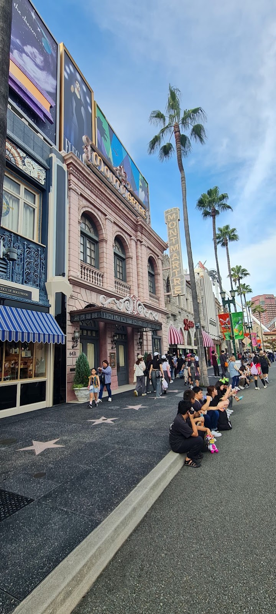
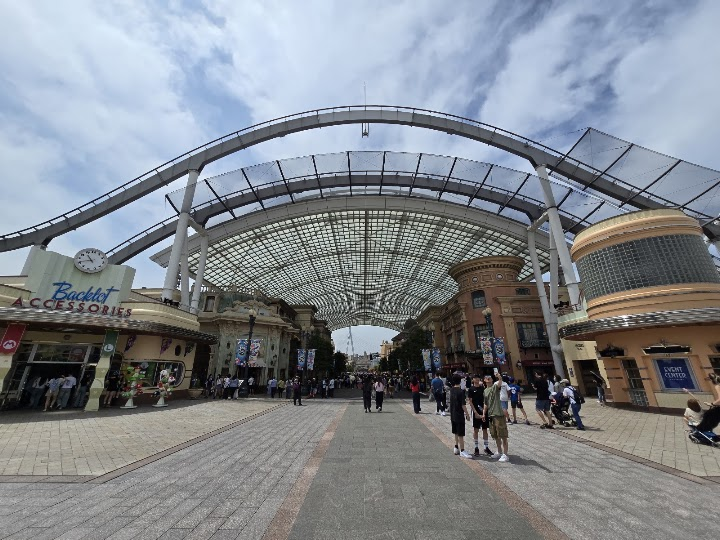
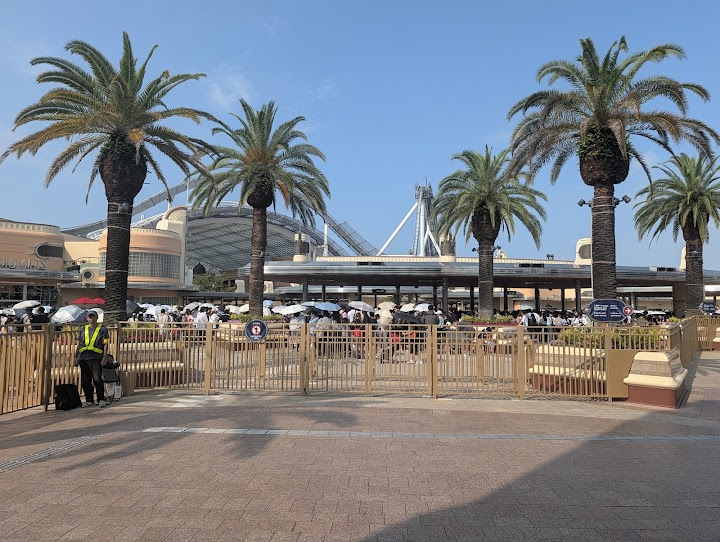
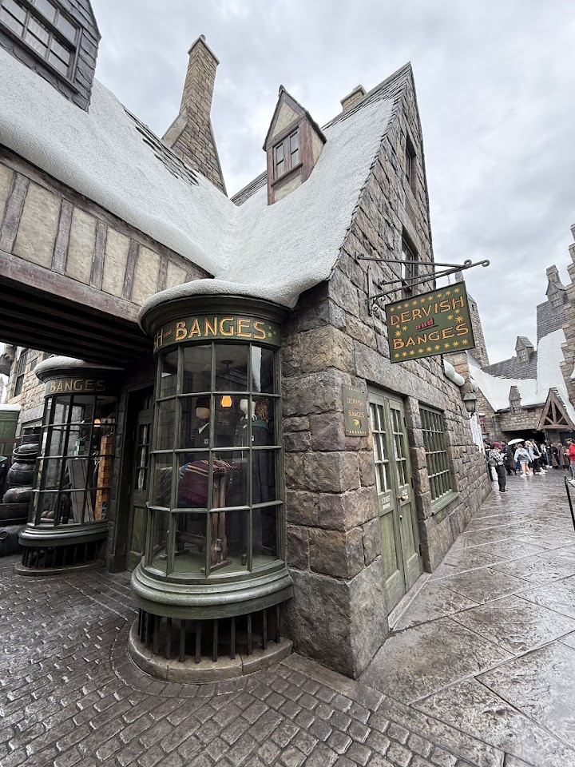

Universal Studios Japan Arch Gate (security and entry; park opens about 09:00)
Open in Google Maps (street view, more photos and reviews there)





Visitor tips on finding it and getting there
Horrible experience. Paid extra for the VIP experience. Was almost scammed by the staff at the vip check-in at the entrance. The 1st guy who scanned us tried to make us pay separately for an entrance fee. Luckily I double checked with my sister who bought the ticket. After insisting that there shouldn't be a separate entrance fee another staff helped us & let us through. After stumbling around the main street we found. The vip lounge tucked away around the corner. They handed us a bunch of vouchers - which for 2026 should be tracked/organized into the vip QR code system. Our guide spoke mainly
Gates open at 7:45am most of the time. I’d advise getting here around 7-7:30am. We arrived at 7:30 and were relatively close. Once the gates opened it took 25 mins to get in! You can walk to Nintendo world and get there first usually. Make sure you get an e pass for timed entry if you want to make sure you guaranteed that spot inside! They check bags for food and drinks but they don’t really mind snacks. We had protein bars inside our and they were cool with it! Anyway, unreal experience and so worth all the hype. Just get here a little early and queue to the right of the gates for a speedi
The facilities are world class however the amount of people is ridiculous, the park was basically unusable due to the crowd size. Two hour + wait times for rides and even with the express pass it was 30 minutes, even the toilet was a 20 minute lineup.